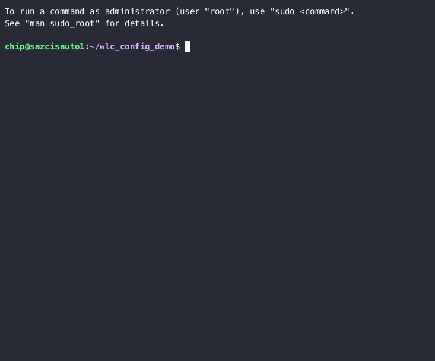

Inventory
Firstly we need to define our target host, the host where we'll be pushing our config.
Make sure you are in the wlc_config_demo directory:
cd ~/wlc_config_demo
Ansible uses an inventory file to define hosts, groups, and different attributes. You can have multiple inventory files. The file can be manually filled or be generated and filled on-demand by querying some other service like azure or ServiceNow. Since we only have a single host, a simple setup, we'll edit the file manually.
nano inventory.yml
The contents should look like the following:
wlc:
hosts:
somehost.example.com:
ansible_network_os: cisco.ios.ios
ansible_connection: ansible.netcommon.network_cli
Replace somehost.example.com with n-z2wicon6.stjude.org. This is the name of our wirless lan controller.
When connecting to the host, your 'admin' account must be used. Each person should have their own admin account setup.
If you are using pod1 as your normal account, then the admin account is pod1admin. Add that so the full config
looks like:
wlc:
hosts:
n-z2wicon6.stjude.org:
ansible_network_os: cisco.ios.ios
ansible_connection: ansible.netcommon.network_cli
ansible_user: pod1admin
Now hit Ctrl-x to save and exit the editor. Hit y to confirm you want to save.

Note that since this is a YAML file, spacing IS important, so be sure the number of leading spaces for each line is correct. In the examples, we'll be using the standard of 2 spaces for each level of hierarchy.
Let's perform a couple of simple tests to make sure everything will work as expected.
Ansible Ping
First we'll 'ping' the host to make sure our machine can at least reach our WLC.
Run the command ansible -m ping all
(venv) chip@sazcisauto1:~/wlc_config_demo$ ansible -m ping all
n-z2wicon6.stjude.org | SUCCESS => {
"changed": false,
"ping": "pong"
}
If your output looks like the above then Congratulations! you've run your first ansible command and proved we can reach the host at least.
Ansible Get Facts
Now let's run another command that will actually log into the device and grab some of the devices attributes. Several of ansible's functions will rely on data collected from the device to decide what tasks or plays to run. For example, the host could be running Ubuntu 22 or it could be running RHEL 9; it could use an ARM CPU or x64. We already know this is a Cisco device running IOS we'll indicate to ansible to collect some basic information about this device.
ansible -m ios_facts wlc -k
This command will prompt your for an SSH password. Enter the 'admin' password for your user and hit enter to continue.
The output should look something like the below:
(venv) chip@sazcisauto1:~/wlc_config_demo$ ansible -m ios_facts wlc -k
SSH password:
n-z2wicon6.stjude.org | SUCCESS => {
"ansible_facts": {
"ansible_net_api": "cliconf",
"ansible_net_gather_network_resources": [],
"ansible_net_gather_subset": [
"default"
],
"ansible_net_hostname": "n-z2wicon6",
"ansible_net_image": "bootflash:packages.conf",
"ansible_net_iostype": "IOS-XE",
"ansible_net_model": "C9800-L-C-K9",
"ansible_net_operatingmode": "autonomous",
"ansible_net_python_version": "3.10.12",
"ansible_net_serialnum": "REDACTED",
"ansible_net_system": "ios",
"ansible_net_version": "17.09.05",
"ansible_network_resources": {}
},
"changed": false
}
If your output looks like the above then, again, Congratulations! you have now succesfully logged into the device and had ansible run some commands to gather "facts" about the device and return the information to you.
Looking at the output we can see that this is, indeed, a device running "IOS-XE", version "17.09.05", and is a model number "C9800-L-C-K9".
Let's continue our automation journey by using our templates to push some configuration: